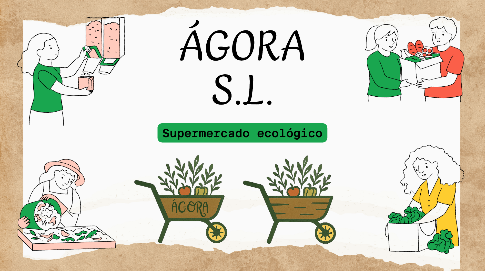

Proyectos
Descubre mis proyectos y trabajos realizados


Aprendiendo a optimizar redes de distribución, analizar datos operacionales y automatizar procesos logísticos para maximizar la eficiencia
Ver mi LinkedInDescubre mis proyectos y trabajos realizados

Descripción del proyecto
Estudiante en formación en Transporte y Logística, además de titulado en Gestión Administrativa con pasión por la innovación tecnológica aplicada a la cadena de suministro.
Mi enfoque se centra en estudiar y aplicar los cambios tencnológicos que están transformando la industria desde una perspectiva de eficiencia, sostenibilidad y competitividad.
Capacidad para gestionar un sistema de monitoreo en tiempo real de flotas con visualización de KPIs, consumo de combustible y cumplimiento de rutas.
Realizar la planificación de rutas de larga distancia y confección de rutas de reparto seleccionando la mejor combinación posible de modos de transporte.
Habilidades para el seguimiento de carga con historiales de temperatura, ubicación y eventos críticos durante el transporte.
Habilidades para predecir demandas, mantenimiento preventivo y optimizar inventarios.
Conocimientos en sistemas logísticos con SAP y plataformas TMS para sincronización de datos en tiempo real.
Control de RPA y workflows automáticos para documentación, facturación y reportes que eliminan procesos manuales.


¿Estás buscando a alguien profesional y con ganas de aprender? Contáctame.
Enviar correo